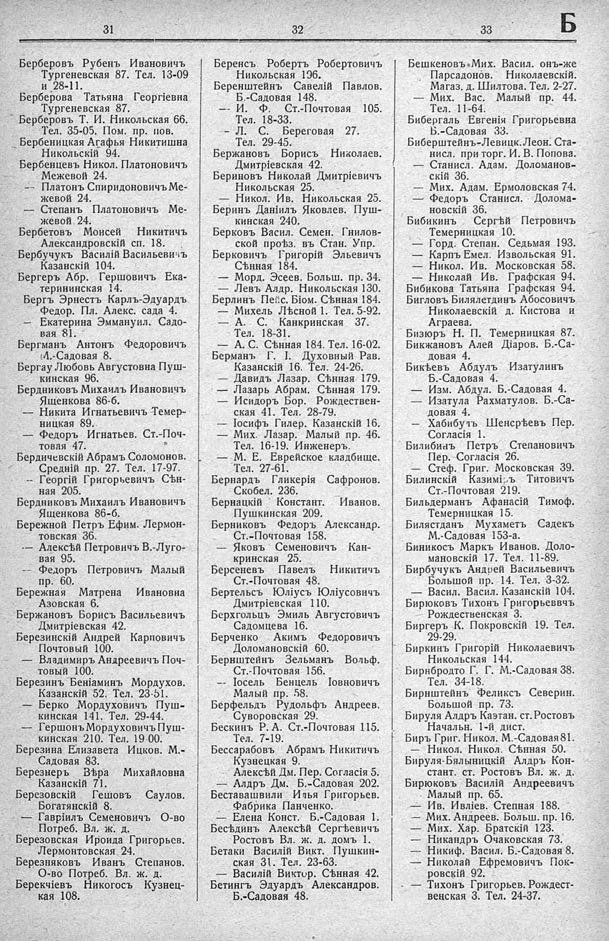

Лист источника 361
Скан

Распознанный текст
31
Берберовъ Рубенъ Ивановичъ
Тургеневская 87. Тел. 13-09
и 28-11.
Берберова Татьяна Георгіевна
Тургеневская 87.
Берберовъ Т. И. Никольская 66.
Тел. 35-05. Пом. пр. пов.
Бербеницкая Агафья Никитишна
Никольскій 94.
Бербенцевъ Никол. Платоновичъ
Межевой 24.
— Платонъ Спиридоновичъ Ме-
жевой 24.
— Степанъ Платоновичъ Ме-
жевой 24.
Бербетовъ Моисей Никитичъ
Александровскій сп. 18.
Бербучукъ Василій Васильевичъ
Казанскій 104.
Бергеръ Абр. Гершовичъ Ека-
терининская 14.
Бергъ Эрнестъ Карлъ-Эдуардъ
Федор. Пл. Алекс. сада 4.
— Екатерина Эммануил. Садо-
вая 81.
Бергманъ Антонъ Федоровичъ
Б.-Садовая 8.
Бергау Любовь Августовна Пуш-
кинская 96.
Бердниковъ Михаилъ Ивановичъ
Ященкова 86-б.
— Никита Игнатьевичъ Темер-
ницкая 89.
— Федоръ Игнатьев. Ст.-Поч-
товая 47.
Бердичевскій Абрамъ Соломонов.
Средній пр. 27. Тел. 17-97.
— Георгій Григорьевичъ Сѣн-
ная 205.
Бердниковъ Михаилъ Ивановичъ
Ященкова 86-б.
Бережной Петръ Ефим. Лермон-
товская 36.
— Алексѣй Петровичъ В.-Луго-
вая 95.
— Федоръ Петровичъ Малый
пр. 60.
Бережная Матрена Ивановна
Азовская 6.
Бержановъ Борисъ Васильевичъ
Дмитріевская 42.
Березинскій Андрей Карповичъ
Почтовый 100.
— Владимиръ Андреевичъ Поч-
товый 100.
Березинъ Беніаминъ Мордухов.
Казанскій 52. Тел. 23-51.
— Берко Мордуховичъ Пуш-
кинская 141. Тел. 29-44.
— Гершонъ Мордуховичъ Пуш-
кинская 210. Тел. 19-00.
Березина Елизавета Ицков. М.-
Садовая 83.
Березнеръ Вѣра Михайловна
Казанскій 71.
Березовскій Гешовъ Саулов.
Богатянскій 8.
— Гавріилъ Семеновичъ О-во
Потреб. Вл. ж. д.
Березовская Ироида Григорьев.
Лермонтовская 24.
Березняковъ Иванъ Степанов.
О-во Потреб. Вл. ж. д.
Берекчіевъ Никогосъ Кузнец-
кая 108.
32
Беренсъ Робертъ Робертовичъ
Никольская 196.
Беренштейнъ Савелій Павлов.
Б.-Садовая 148.
— И. Ф. Ст.-Почтовая 105.
Тел. 18-33.
— Л. С. Береговая 27.
Тел. 29-45.
Бержановъ Борисъ Николаев.
Дмитріевская 42.
Бериновъ Николай Дмитріевичъ
Никольская 25.
— Никол. Ив. Никольская 25.
Беринъ Даніилъ Яковлев. Пуш-
кинская 240.
Берковъ Васил. Семен. Гнилов-
ской проѣз. въ Стан. Упр.
Берковичъ Григорій Эльевичъ
Сѣнная 184.
— Морд. Эсеев. Больш. пр. 34.
— Левъ Алдр. Никольская 130.
Берлинъ Пенс. Біом. Сѣнная 184.
— Михель Лѣсной 1. Тел. 5-92.
— А. С. Канкринская 37.
Тел. 18-31.
— А. С. Сѣнная 184. Тел. 16-02.
Берманъ Г. І. Духовный Рав.
Казанскій 16. Тел. 24-26.
— Давидъ Лазар. Сѣнная 179.
— Лазарь Абрам. Сѣнная 179.
— Исидоръ Бор. Рождествен-
ская 41. Тел. 28-79.
— Іосифъ Гилер. Казанскій 16.
— Мих. Лазар. Малый пр. 46.
Тел. 16-19. Инженеръ.
— М. Е. Еврейское кладбище.
Тел. 27-61.
Бернардъ Гликерія Сафронов.
Скобел. 236.
Бернацкій Констант. Иванов.
Пушкинская 209.
Берниковъ Федоръ Александр.
Ст.-Почтовая 158.
— Яковъ Семеновичъ Кан-
кринская 25.
Берсеневъ Павелъ Никитичъ
Ст.-Почтовая 48.
Бертельсъ Юліусъ Юліусовичъ
Дмитріевская 110.
Берхгольцъ Эмиль Августовичъ
Садомцева 16.
Берченко Акимъ Федоровичъ
Доломановскій 60.
Бернштейнъ Зельманъ Вольф.
Ст.-Почтовая 156.
— Іосель Бенцель Іовновичъ
Малый пр. 58.
Берфельдъ Рудольфъ Андреев.
Суворовская 29.
Бескинъ Р. А. Ст.-Почтовая 115.
Тел. 7-19.
Бессарабовъ Абрамъ Никитичъ
Кузнецкая 9.
Алексѣй Дм. Пер. Согласія 5.
— Алдръ Дм. Б.-Садовая 202.
Беставашвили Илья Григорьев.
Фабрика Панченко.
— Елена Конст. Б.-Садовая 1.
Бесѣдинъ Алексѣй Сергѣевичъ
Ростовъ Вл. ж. д. домъ 1.
Бетаки Василій Викт. Пушкин-
ская 31. Тел. 23-63.
— Василій Виктор. Сѣнная 42.
Бетингъ Эдуардъ Александров.
Б.-Садовая 48.
33
Б
Бешкеновъ Мих. Васил. онъ-же
Парсадонов. Николаевскій.
Магаз. д. Шилтова. Тел. 2-27.
— Мих. Вас. Малый пр. 44.
Тел. 11-64.
Бибергаль Евгенія Григорьевна
Б.-Садовая 33.
Биберштейнъ-Левицк. Леон. Ста-
нисл. при торг. И. В. Попова.
— Станисл. Адам. Доломанов-
скій 36.
— Мих. Адам. Ермоловская 74.
— Федоръ Станисл. Долома-
новскій 36.
Бибикинъ Сергѣй Петровичъ
Темерницкая 10.
— Горд. Степан. Седьмая 193.
— Карпъ Емел. Извольская 91.
— Никол. Ив. Московская 58.
— Николай Ив. Графская 94.
Бибикова Татьяна Графская 94.
Бигловъ Билялетдинъ Абосовичъ
Николаевскій д. Кистова и
Аграева.
Бизюръ Н. П. Темерницкая 87.
Бикжановъ Алей Діаров. Б.-Са-
довая 4.
Бикѣевъ Абдулъ Изатулинъ
Б.-Садовая 4.
— Изм. Абдул. Б.-Садовая 4.
— Изатула Рахматулов. Б.-Са-
довая 4.
— Хабибутъ Шенсрѣевъ Пер.
Согласія 1.
Билибинъ Петръ Степановичъ
Пер. Согласія 26.
— Стеф. Григ. Московская 39.
Билинскій Казиміръ Титовичъ
Ст.-Почтовая 219.
Бильдерманъ Афанасій Тимоф.
Темерницкая 15.
Билястданъ Мухаметъ Садекъ
М.-Садовая 153-а.
Биникосъ Маркъ Иванов. Доло-
мановскій 17. Тел. 11-89.
Бирбучукъ Андрей Васильевичъ
Большой пр. 14. Тел. 3-32.
— Васил. Васил. Казанскій 104.
Бирюковъ Тихонъ Григорьеввчъ
Рождественская 3.
Биргеръ К. Покровскій 19. Тел.
29-29.
Биркинъ Григорій Николаевичъ
Никольская 144.
Бирнбродто Г. Г. М.-Садовая 38.
Тел. 34-18.
Бирнштейнъ Феликсъ Северин.
Большой пр. 73.
Бируля Алдръ Каэтан. ст. Ростовъ
Начальн. 1-й дист.
Биръ Григ. Никол. М.-Садовая 81.
— Никол. Никол. Сѣнная 50.
Бируля-Бялыницкій Алдръ Кон-
стант. ст. Ростовъ Вл. ж. д.
Бирюковъ Василій Андреевичъ
Малый пр. 65.
— Ив. Ивліев. Степная 188.
— Мих. Андреев. Больш. пр. 16.
— Мих. Хар. Братскій 123.
— Никандръ Очаковская 73.
— Никиф. Васил. Б.-Садовая 8.
— Николай Ефремовичъ Пок-
ровскій 92.
— Тихонъ Григорьев. Рождест-
венская 3. Тел. 24-37.